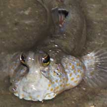
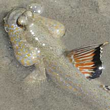
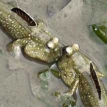
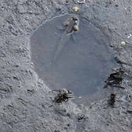
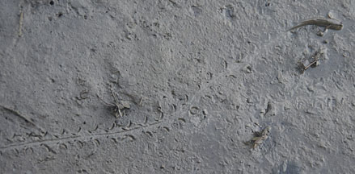

|
|
| fishes text index | photo index |
| Phylum Chordata > Subphylum Vertebrate > fishes > Family Gobiidae |
| Mudskippers Family Gobiidae updated Sep 2020
Where seen? Mudskippers are commonly seen on some of our shores. They are particularly abundant in mangroves and muddy shores, but some like the Gold-spotted mudskippers are also commonly seen on rocky shores and near reefs. What are mudskippers? Often mistaken for frogs or snakes, mudskippers are actually fish that breathe with gills. Mudskippers belong to the Family Gobiidae and include these four genera Boleophthalmus, Periophthalmus, Periophthalmadon and Scartelaos. Features: Those seen about 6-12cm, some species can be much larger or smaller. Mudskippers are well adapted to the intertidal area. Being able to stay of water for a while gives mudskippers an advantage over 'normal' fishes. During low tide, they are among the few marine creatures that can exploit the dry muddy or sandy flats. More about how to tell apart small mudskippers commonly found on our shores. Fish out of water? How do does it breathe out of water? Just as divers breathe underwater through tanks of air, the mudskipper carries 'tanks of water' in its gill chambers. These chambers are enlarged which give the fish their cute puffy-faced look. Just as air tanks give divers only limited breathing time underwater, the mudskipper also has to go back to the water to refresh the 'tank of water' in its gills. The fish can also breathe air through its wet skin. The mudskipper is in fact more comfortable crawling around on the mud than submerged in water! |
 Bulbous eyes high on the head. Kusu Island, Jun 05 |
 Dorsal fin often colourful and raised to communicate with other mudskippers. Chek Jawa, Dec 09 |
 These fishes can be quite quarrelsome. Chek Jawa, Oct 07 |
| Masters of the mudflats: The mudskipper has other interesting features that enables it to rule the mud! Large eyes at the top of the head give an all-round view - it's hard to sneak up on a mudskipper. While the mouth faces downwards to feed on the mud surface. The pectoral fins are used like crutches to crawl over
mud. In some mudskippers, the pelvic
fins are fused to form a sucker so they can better cling to rocks
and mangrove tree roots. Some have colourful dorsal fins that can be raised to signal
other mudskippers on the sand or mudflats. How do mudskippers skip? They curl their muscular body sideways then push against the mud to spring forward. The Bearded mudskipper can 'stand' on its tail, if only for a brief moment, in an attempt to impress the ladies. |
|
 A tunnel at the base of the 'swimming pool'. Sungei Buloh Wetland Reserve, Feb 12 |
 Mudskipper tracks on the mud. Sungei Buloh Wetland Reserve, Feb 12 |
|
| Human uses: The Giant
mudskipper is eaten in some
places such as Taiwan. They are caught with nets strung at ground
level, or with cast-nets. Status and threats: The Giant mudskipper is listed among the threatened animals of Singapore, mainly due to habitat loss. Our other mudskippers are not listed as endangered. However, like other creatures of the intertidal zone, they are affected by human activities such as reclamation and pollution. |
| Unidentifed Mudskippers on Singapore shores |
On wildsingapore
flickr
|
| Some Mudskippers on Singapore shores |

|
|


| Mudskippers
recorded for Singapore from Helen K. Larson, Zeehan Jaafar and Kelvin K. P. Lim. 29 June 2016. An updated checklist of the gobioid fishes of Singapore. +Other additions (Singapore Biodiversity Record, etc)
|
Links
|